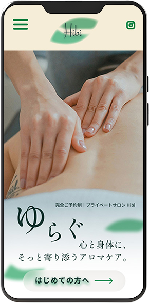
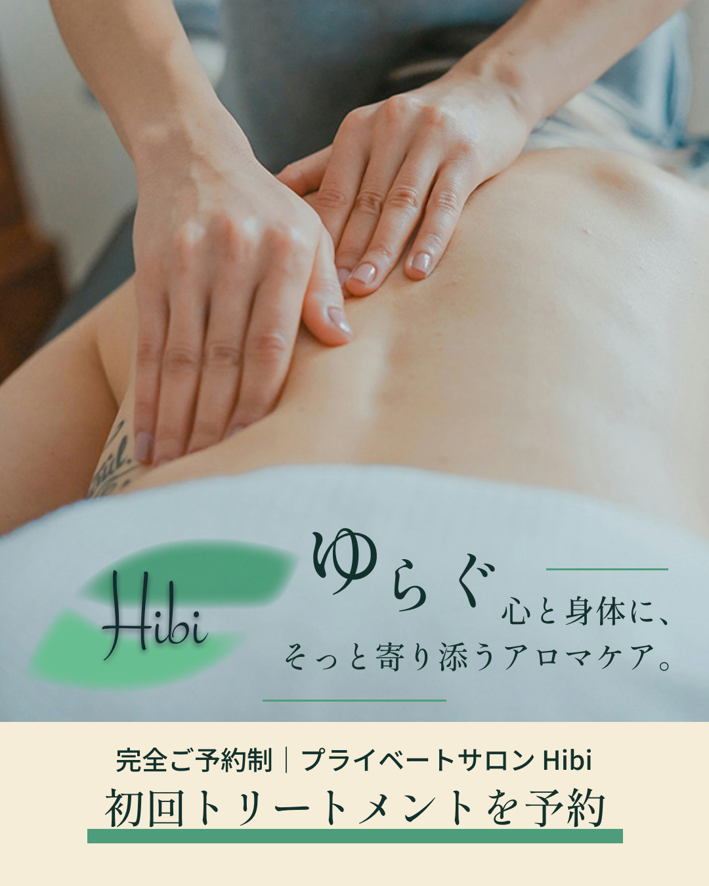
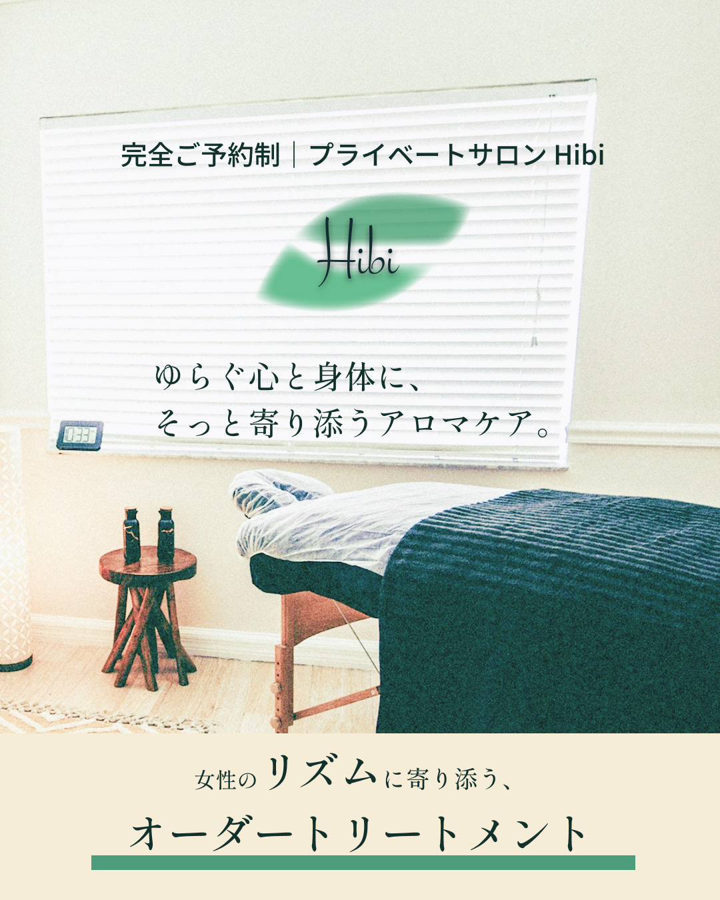

LPファーストビュー・ 広告ビジュアル
リラクゼーションサロン想定（自主制作）




概要
住宅街にある女性向けリラクゼーションサロンを想定し、WebサイトのファーストビューとSNSのビジュアルを制作。
想定したお客様
仕事や家事による疲れに加え、ホルモンバランスの変化などで心身の不調が気になっている30〜50代女性。
目指したこと
女性特有の不調や相談のしづらさによる心理的ハードルを和らげ、「自分のために行ってもいい場所」と感じてもらう。身構えることなく初来店につながることを目指した。
デザインの意図
ベージュとグレーをベースに淡いグリーンをアクセントとして使用し、落ち着きと安心感のあるトーンでまとめた。ゆったりくつろげる雰囲気と清潔感が伝わるよう内観写真を活かし、余白を十分に取ることで、身構えずに情報へ触れられる空気感を意識した。
振り返り
安心感のある雰囲気づくりと、次の行動がイメージしやすい見せ方を意識した。今後はLP全体の流れや施術内容も含め、問い合わせにつながる体験設計を考えていきたい。